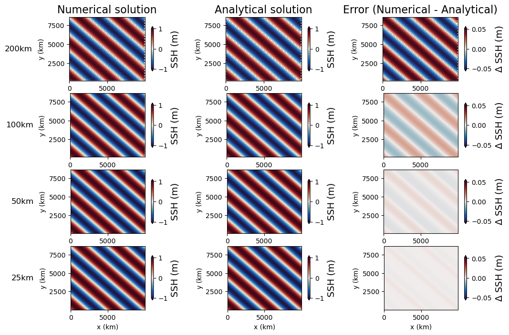
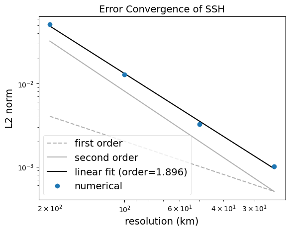

inertial gravity wave
The inertial gravity wave task implements a test of surface wave propagation with the rotating, linear shallow water equations on a doubly periodic domain. This test has an exact solution which is used to assess the numerical accuracy and convergence of the MPAS-Ocean discretization. The implementation is from Bishnu et al.(2023)
description
The inertial_gravity_wave task runs the inertial gravity wave simulation for 4
different resolutions: 200, 100, 50, and 25 km.
The forward step for each resolution runs the simulation for 10 hours. The model is configured without vertical advection and mixing. No tracers are enabled and the pressure gradient used is the gradient of the sea surface height. Horizontal mixing and bottom friction are also neglected. The nonlinear momentum terms are not included and the layer thickness equation is linearized.
The analysis step computes the L2-norm of the difference between the simulated SSH field and the exact solution at the end of the simulation. It also computes the convergence rate with resolution.
The visualization step produces two plots: the convergence of the L2-norm with resolution and a plan-view of the simulated, exact, and (simulated-analytical) SSH fields.
 {kind=link}
{kind=link}
mesh
For each resolution, the init step generates and planar hexagonal
mesh that is periodic in both the x and y directions.
vertical grid
Since this task is a shallow water case, the vertical grid is set to a single layer configuration.
[vertical_grid]
# The type of vertical grid
grid_type = uniform
# Number of vertical levels
vert_levels = 1
# Depth of the bottom of the ocean
bottom_depth = 1000.0
# The type of vertical coordinate (e.g. z-level, z-star)
coord_type = z-star
# Whether to use "partial" or "full", or "None" to not alter the topography
partial_cell_type = None
# The minimum fraction of a layer for partial cells
min_pc_fraction = 0.1
initial conditions
The initial conditions are set to the exact solution at time \(t=0\):
forcing
N/A
time step and run duration
The time step is determined by the config option dt_per_km according to the
mesh resolution. The run duration is 10 hours.
config options
The following config options are availiable for this case:
[inertial_gravity_wave]
# The size of the domain in km in the x direction, (size in y direction =
# sqrt(3)/2*lx
lx = 10000
# The Corilois parameter (constant)
coriolis_parameter = 1e-4
# Amplitude of the ssh initial condition
ssh_amplitude = 1.0
# Number of wavelengths in x direction
n_wavelengths_x = 2
# Number of wavelengths in y direction
n_wavelengths_y = 2
# Convergence threshold below which the test fails
conv_thresh = 1.8
# time step per resolution (s/km), since dt is proportional to resolution
dt_per_km = 3.0
cores
The number of cores is determined according to the config options
max_cells_per_core and goal_cells_per_core.